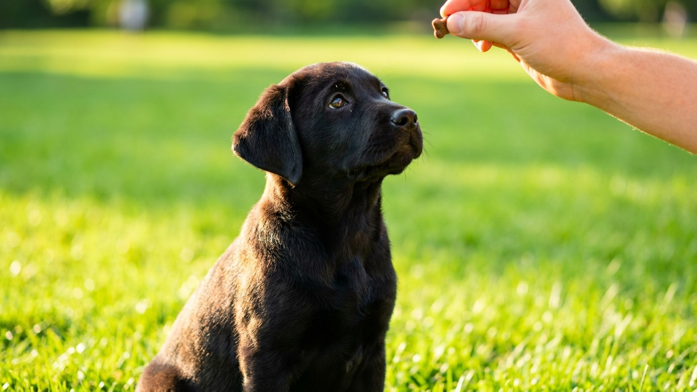

Щенки начинают учиться раньше, чем большинство хозяев начинают их учить. В 3-4 недели они уже воспринимают социальные сигналы от матери и братьев. В 8 недель, когда щенок попадает в новый дом, его мозг максимально пластичен и готов к обучению. Ждать 6 месяцев «пока подрастёт» — значит упустить самый эффективный период. Разбираем, с чего начать, как работает положительное подкрепление и почему пять правильных команд важнее двадцати неправильных.
Устойчивый миф: «щенка нельзя дрессировать до 6 месяцев». Он основан на старой советской кинологии, ориентированной на служебную дрессировку (ОКД, ЗКС), где требовалась физическая зрелость для определённых упражнений. Базовые навыки послушания и социализация начинаются с первого дня в доме.
По данным American Veterinary Society of Animal Behavior (AVSAB), щенки могут начинать групповые занятия уже через 7 дней после первой вакцинации (в 8-9 недель), не дожидаясь полного курса прививок. Риск инфекционных заболеваний при контакте с привитыми щенками значительно ниже риска поведенческих проблем из-за недостаточной ранней социализации.
Сенситивный период социализации — от 3 до 12-14 недель. В этот период щенок формирует базовые установки: что безопасно, что опасно, как общаться с людьми и другими животными. Пропустить его нельзя.
Современная дрессировка строится на оперантном обусловливании с положительным подкреплением. Это не «баловать», это физиология: нейронные связи в мозге закрепляются, когда за действием следует приятный результат.
Как это работает на практике:
Кликер — маркер правильного действия. Звук кликера точнее, чем слово «молодец»: срабатывает в ту же миллисекунду, когда щенок сделал нужное. Не обязателен, но значительно ускоряет обучение. Перед использованием: 30-50 раз «клик-лакомство» без команды — щенок понимает, что звук = награда.
Порядок не случайный — каждая следующая команда строится на предыдущей.
1. «Ко мне» (recall)
Самая важная команда — буквально спасает жизнь. Сначала отрабатывается дома: позвали, щенок подошёл — бурная радость и лакомство. Команда никогда не должна предшествовать неприятному (купание, стрижка когтей) — иначе щенок перестанет откликаться. «Ко мне» = всегда хорошо, всегда награда.
2. «Сидеть» (sit)
Базовый положительный контроль. Техника: лакомство у носа, медленно ведём вверх-назад — задняя часть опускается. Как только сел — маркер + лакомство. Слово «сидеть» добавляем только после того, как щенок стабильно выполняет жест.
3. «Лежать» (down)
Строится на «сидеть». Щенок сидит, лакомство у носа, ведём вниз к полу и чуть вперёд — щенок ложится. Сложнее, чем «сидеть», требует больше сессий.
4. «Место» (go to mat / down-stay)
Щенок идёт на подстилку/коврик и остаётся там. Самая практичная команда в быту: щенок не бегает под ногами во время готовки, не мешает гостям. Отрабатывается в несколько этапов: подойти к коврику → лечь → остаться.
5. «Оставь» / «Фу» (leave it / drop it)
Безопасность: щенок немедленно прекращает жевать, нюхать или брать опасный предмет. Техника: закройте лакомство в кулаке, щенок пытается добраться — ждите. Как только отвернулся или отошёл — кликер + дайте лакомство из другой руки. Нельзя кричать «фу» как ругательство — это снижает эффективность команды.
Щенячий мозг устаёт быстро. Длинные занятия не эффективнее — они хуже.
Дрессировка и социализация — разные вещи, но идут вместе в первые месяцы. Социализация — это знакомство с миром: разные люди (дети, бородатые, в шляпах, в очках), звуки (пылесос, гроза, мотоцикл), поверхности (плитка, решётка, трава, песок), другие животные.
Окно социализации закрывается примерно в 14-16 недель. Не закрывается полностью — взрослых собак тоже социализируют, но это требует значительно больше времени и усилий.
По данным исследования Applied Animal Behaviour Science (2020), щенки, не прошедшие социализацию до 3 месяцев, в 3 раза чаще проявляют страховую агрессию во взрослом возрасте. Это не характер и не порода — это следствие пропущенного периода.
Самостоятельная дрессировка отлично работает для базовых команд. Но в ряде случаев нужен специалист:
Кинолог, работающий методами положительного подкрепления (сертификация KAREN PRYOR ACADEMY, CPDT-KA, диплом ISCP) — признак профессионала. Специалисты, обещающие «подавить доминантность» жёсткими методами — красный флаг.
← Все статьи · Открыть AnimaLife в Telegram · RSS
Читайте также: Гид по социализации щенка · Тревога разлуки у собаки